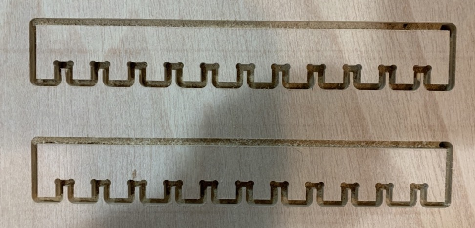
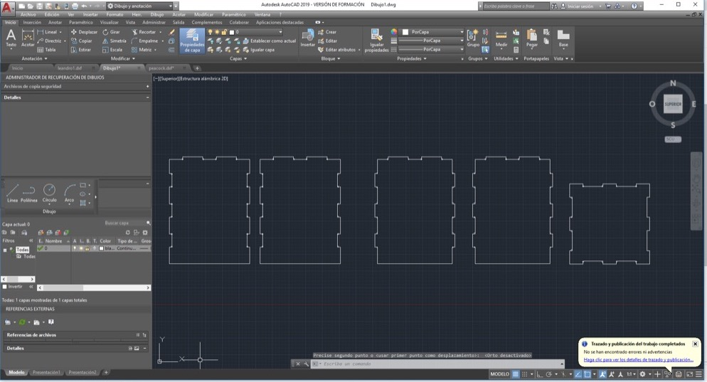
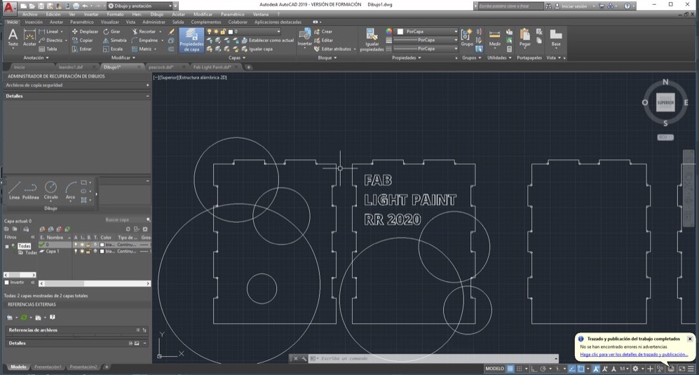
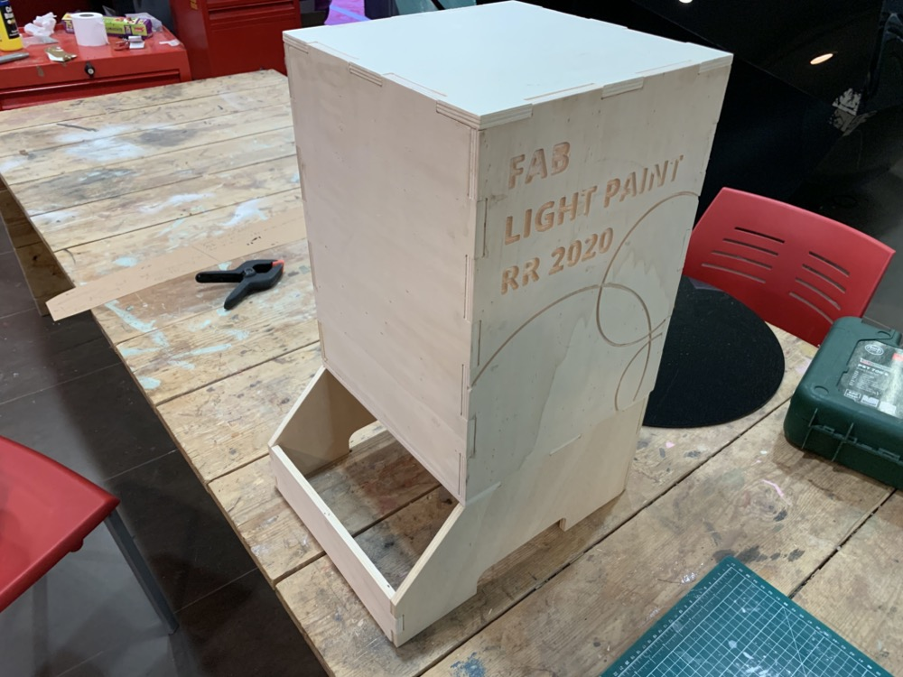

<!DOCTYPE html>
<html lang="en"></html>
<head>
  <meta charset="utf-8">
  <meta content="IE=edge" http-equiv="X-UA-Compatible">
  <meta content="width=device-width, initial-scale=1" name="viewport">
  <title> Rafael Rebolleda — Fab Academy 2020 Documentation</title>
  <!-- Google Fonts-->
  <link rel="stylesheet" href="https://fonts.googleapis.com/css?family=Catamaran&amp;display=swap">
  <link rel="stylesheet" href="../css/main.css">
</head>
<body> 
  <nav>
    <header>
      <ul>
        <li>Rafael Rebolleda</li>
        <li>ESNE + LEON</li>
        <li>Madrid, Spain</li>
      </ul>
      <p class="bio">Human Centric Research & Innovation consultant and professor. Also looking for PhD opportunities!</p>
    </header>
    <ol>
      <li><a class="red" href="../">About me</a></li>
    </ol>
    <h1>Assignments</h1>
    <ol> 
      <li><a href="../W1/">Principles & Practices</a></li>
      <li><a href="../W2/">Computer Aided Design</a></li>
      <li><a href="../W3/">Computer Controlled Cutting</a></li>
      <li><a href="../W4/">Electronics Production</a></li>
      <li><a href="../W5/">3D Scan + Printing</a></li>
      <li><a href="../W6/">Electronics Design</a></li>
      <li><a href="../W7/">Computer Controlled Machining</a></li>
    </ol>
  </nav>
  <main>
    <h1>W7: Computer Controlled Machining</h1>
    <p>During this assignment I want to make part of my machine and final project, namely the box that will hold it.</p>
    <h2>Characterization</h2>
    <p>I'm on my own for this group assignment, so I looked up the machine specs and run the comb test from 9.5mm to 10.5 mm (for a 10 mm stock) to understand the impact of the drill on the stock and start learning the toolpath software and operation of the machine.</p>
    <h2>Design</h2>
    <p>I decided to go with AutoCAD this time, as I hadn't tried it before and it seemed like a simple project to try it out. I've found AutoCAD to have a pretty weird conceptual model for someone who comes from 2D, but it's very fast once you get the hang of it. Simmetry tools are pretty handy!</p>
    <p>So the first part is the top box:</p>
    <p>My local instructor lends me a tip for introducing nicer, softer dogbones: rather than centering the circle on the corner, displace it by the radius. It's proven to work pretty well later on:</p>
    <p>I also want to add a bit of decoration, so I import some text from Illustrator and create a few circles that follow up on theme of the machine. These will be carved on to the surface of each side. I may fill or paint them later if I have some time.</p>
    <h2>Preparing for machining</h2>
    <p>The software to prepare the design for machining is VCarve, and it seems fairly simple. After importing the designs from AutoCAD it's a matter of selecting paths and instruct the machine to drill, follow a path, empty an area, etc. There are options for depth, speed, feed, rpms, tabs, etc. </p>
    <p>The software can simulate the machining process:</p>
    <p>First of we'll drill the dogbones, and then run the paths around the outside so measures are kept. We try to make the most of the stock by using it's sides, although that requires very good alignment of the stock, which is typically a bit bent a needs taming:</p>
    <p>To make the most of the stock, we zero in with special care:</p>
    <p>We load the file with a USB pen drive into the machine:</p>
    <video src="machining.mp4" autoplay mute controls loop></video>
    <p>There are a couple of hiccups of little importance along the way. For example, because some boards are particularly combed, the drill doesn't make it to the very end by a hair. In this case it's very easy to fix just with the cutter.</p>
    <p>Another issue (my problem really) is to be careful and cut the tabs nicely before taking the piuece out of the stock. It didn't matter much in this case, but it could've been worse:</p>
    <h2>Assembling </h2>
    <p>Pieces come out a bit rough, so a bit of sanding around the edges and engravings leaves everything nicely finished.</p>
    <p>Assembling everything together is rather easy. The box would probably hold itself with the pressure from the joints, but I add a bit of glue.</p>
    <video src="assembling.mp4" autoplay controls mute loop></video>
    <p>The box is now ready for the next steps in building the machine for the final project :)</p>
    <h3>Files</h3>
    <ul>
      <li><a href="box.dxf">Box Design (AutoCAD DXF)</a></li>
    </ul>
  </main>
</body>